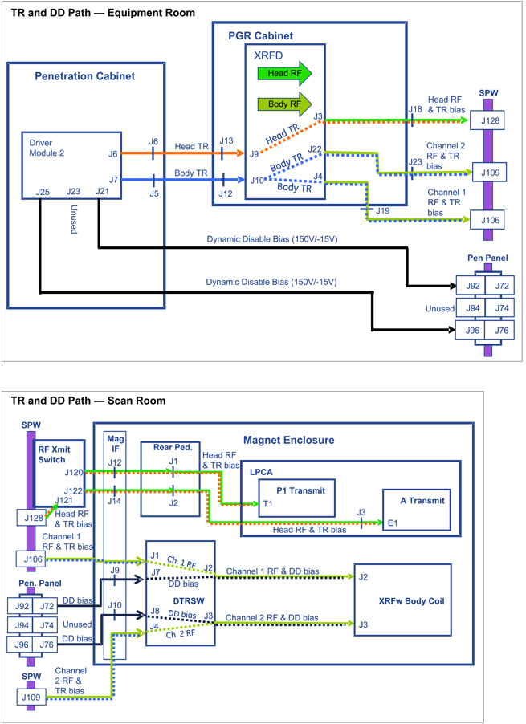

Operating Documentation
Direction 5670006, Rev# 1
Discovery MR750w GEM Service Methods
Module Version 2.0, Version Date 10/12/11
Operating Documentation |
Dynamic Disable (DD) switching bias is used to tune and detune the RF body coil. Dual and separate DD bias levels are generated inside the Driver Module and then routed through special high voltage coaxial lines to the DTRSW.
Inside the DTRSW module each DD bias level is introduced onto its respective RF transmission line and then routed to the RF body coil channel 1 and 2 tuning circuits. DD bias must be applied to both ports of the RF body coil prior to pulsing either with RF energy from the RF amplifier.
Use the illustration and steps below to troubleshoot DD bias faults.
Illustration 1: Transmit/Receive and DD Signal Path

Set the RF ENB switch on front of DTX-1 Exciter module in the down (disable) position to disable RF output.
Perform the TR DD System Path Check and confirm that the results indicate a BD1 short-circuit fault.
Remove the RF Channel 1 transmission line cable from J2 at the bottom of DTRSW module located on the right side of the magnet inside the RF screen room.
Repeat the TR DD System Path Check and carefully review the results.
Short-circuit Fault present: The fault condition is between the DTRSW and the Driver Module. See Illustration 1. Starting at the DTRSW and working your way back to the Driver Module, remove the DD bias connection at each point in the circuit and repeat the diagnostic until an open-circuit fault instead of a short-circuit fault condition is reported. If you get all the way back to the Driver Module and the short-circuit fault remains, then replace the Driver Module.
Open-circuit fault present: Reconnect the RF Channel 1 transmission line cable at bottom of DTRSW module at J2 and disconnect the other end at the RF body coil
Open-circuit fault present: There is a short-circuit inside the RF body coil. Please repair or replace the coil
Short-circuit fault present: There is a short-circuit inside the transmission line. Please repair or replace the line.
Reconnect the cables to their normal configuration.
Set the RF ENB switch on the front of the DTX-1 Exciter module in the up (enable) position to enable RF output.
If you replaced the RF body coil then run the Dual Drive Quadrature Tool. If any other components in the transmit circuit replaced then perform the Forward Reverse Quadrature Check.
Run the DQA II Tool and Troubleshooting procedure to confirm the system is in normal working order.
Set the RF ENB switch on front of DTX-1 Exciter module in the down (disable) position to disable RF output.
Perform the TR DD System Path Check and confirm that the results indicate a BD2 short-circuit fault.
Remove the RF Channel 2 transmission line cable from J3 at the bottom of DTRSW module located on the right side of the magnet inside the RF screen room.
Repeat the TR DD System Path Check and carefully review the results.
Short-circuit fault present: The fault condition is between the DTRSW and the Driver Module. See Illustration 1. Starting at the DTRSW and working your way back to the Driver Module, remove the DD bias connection at each point in the circuit and repeat the diagnostic until an open-circuit fault instead of a short-circuit fault condition is reported. If you get all the way back to the Driver Module and the short-circuit fault remains, then replace the Driver Module.
Open-circuit fault present: Reconnect the RF Channel 2 transmission line cable at bottom of DTRSW module at J3 and disconnect the other end at the RF body coil
Open-circuit fault present: There is a short-circuit inside the RF body coil. Please repair or replace the coil.
Short-circuit Fault present: There is a short-circuit inside the transmission line. Please repair or replace the line.
Reconnect the cables to their normal configuration.
Set the RF ENB switch on the front of the DTX-1 Exciter module in the up (enable) position to enable RF output.
If you replaced the RF body coil then run the Dual Drive Quadrature Tool. If any other components in the transmit circuit replaced then perform the Forward Reverse Quadrature Check.
Run the DQA II Tool and Troubleshooting procedure to confirm the system is in normal working order.
Set the RF ENB switch on front of DTX-1 Exciter module in the down (disable) position to disable RF output.
Perform the TR DD System Path Check and confirm that the results indicate a BD1 open-circuit fault.
Swap the RF Channel 1 and RF Channel 2 transmission line cables at the bottom of DTRSW module located on the right side of the magnet inside the RF screen room.
Repeat the TR DD System Path Check and carefully review the results.
Open-circuit Fault remains on BD1: The fault condition is between the DTRSW and the Driver Module. See Illustration 1. Starting at the DTRSW and working your way back to the Driver Module, swap the DD bias connections at each point in the circuit and repeat the diagnostic until the open-circuit fault moves from BD1 to BD4. If you get all the way back to the driver module and the fault remains on BD1, replace the Driver Module.
Open-circuit Fault reported on BD4: Swap the RF Channel 1 and RF Channel 2 transmission line cables at the RF body coil connectors and repeat the diagnostic.
Open-circuit Fault remains on BD4: The RF Channel 1 transmission line appears faulty. Please repair or replace the line.
Open-circuit Fault moves to BD1: The RF body coil appears faulty. Please repair or replace the coil.
Reconnect cables to their normal configuration.
Set the RF ENB switch on the front of the DTX-1 Exciter module in the up (enable) position to enable RF output.
If you replaced the RF body coil then run the Dual Drive Quadrature Tool. If any other components in the transmit circuit replaced then perform the Forward Reverse Quadrature Check.
Run the DQA II Tool and Troubleshooting procedure to confirm the system is in normal working order.
Set the RF ENB switch on front of DTX-1 Exciter module in the down (disable) position to disable RF output.
Perform the TR DD System Path Check and confirm that the results indicate a BD2 open-circuit fault.
Swap the RF Channel 1 and RF Channel 2 transmission line cables at the bottom of DTRSW module located on the right side of the magnet inside the RF screen room.
Repeat the TR DD System Path Check and carefully review the results.
Open-circuit Fault remains on BD4: The fault condition is between the DTRSW and the Driver Module. See Illustration 1. Starting at the DTRSW and working your way back to the Driver Module, swap the DD bias connections at each point in the circuit and repeat the diagnostic until the open-circuit fault moves from BD1 to BD4. If you get all the way back to the driver module and the fault remains on BD4, replace the Driver Module.
Open-circuit Fault reported on BD1: Swap the RF Channel 1 and RF Channel 2 transmission line cables at the RF body coil connectors and repeat the diagnostic.
Open-circuit Fault remains on BD1: The RF Channel 1 transmission line appears faulty. Please repair or replace the line.
Open-circuit Fault moves to BD2: The RF body coil appears faulty. Please repair or replace the coil.
Reconnect cables to their normal configuration.
Set the RF ENB switch on the front of the DTX-1 Exciter module in the up (enable) position to enable RF output.
If you replaced the RF body coil then run the Dual Drive Quadrature Tool. If any other components in the transmit circuit replaced then perform the Forward Reverse Quadrature Check.
Run the DQA II Tool and Troubleshooting procedure to confirm the system is in normal working order.
Body and head TR bias is always applied to the respective circuits irrespective of whether those circuits are in use. A fault condition on an unused head or body circuit can inhibit scanning. While the RF body coil is in use (system in body mode) the head TR bias is not monitored for open circuit conditions. Body and head TR switching bias is applied during transmit and receive modes to ensure the RF transmit and receive signal is directed through the proper body and head RF circuit paths. See Table 1 for summary of various biasing levels.
Illustration 2: Transmit/Receive and DD Signal Path
Table 1: TR and DD Bias Levels
| RF Amp Input Bias (Loaded) | Dynamic Disable Bias | ||||
| TR Bias | Mode | DD Bias | Mode | ||
| Transmit | Receive | BD1 | BD2 | ||
| Head | +8.2 V | -14.4 V | Head | +150.0 V | +150.0 V |
| Body | +2.9V | -14.4 V | Body | -15.0 V | -15.0 V |
| Driver Module Output Bias (Loaded) | Driver Module Output Bias (Unloaded) | ||||
| TR Bias | Mode | TR Bias | Mode | ||
| Transmit | Receive | Transmit | Receive | ||
| Head | +8.3 V | -14.4 V | Head | +8.4 V | -14.4 V |
| Body | +4.3V | -14.4 V | Body | +5.0V | -14.4 V |
Head TR bias is supplied by the Driver Module to the XRFD amplifier where it is introduced, along with the head RF transmit signal, onto the head RF transmission line. At the Secondary Pen Wall (SPW), the Head RF Transmit switch routes the TR bias and RF signals down transmission lines to either connectors P1 or A (located inside the LPCA). This bias is not used and is not monitored for open circuit conditions (but is monitored for short-circuit conditions) until a transmit/receive coil is attached to one of these connectors. As explained earlier, the head TR bias is then used by circuitry inside the coils to insure proper routing of transmit and receive RF signals.
Body TR bias is supplied by the Driver Module to the XRFD amplifier where it is split and then introduced, along with the channel 1 & 2 RF transmit signals, onto the channel 1 and 2 RF transmission lines. The body TR bias and channel 1 & 2 RF signals are routed down the channel 1 & 2 transmission lines to the DTRSW module. As explained earlier the body TR bias is then used by channel 1 and 2 circuitry inside the DTRSW module to insure proper routing of transmit and receive RF signals. The body TR bias does not exit the DTRSW module and is not applied to the RF body coil.
Because the TR bias is split and shared between channels 1 & 2 inside the XRFD amplifier, the system cannot isolate a fault to either channel 1 or 2. It can report only that a body TR fault occurred. If the location of the fault is between the XRFD amplifier and RF body coil then you must use the processes described in following sections to determine on which transmission channel the fault is located.
Set the RF ENB switch on the front of the DTX-1 Exciter module in the down (disable) position to disable RF output.
Remove all coils from the LPCA P1 and A connectors.
Perform the TR DD System Path Check and carefully review the results.
No fault present: The removed coil appears faulty. Please repair or replace the coil.
Short-circuit Fault present: The fault condition is between the LPCA and the Driver Module. Refer to Illustration 2. Starting at the LPCA and working your way back to the Driver Module, remove the head transmission line connections at each point in the circuit and repeat the diagnostic until the fault condition stops. If you get all the way back to the Driver Module and the fault remains, replace the Driver Module.
Reconnect all cables to their normal configuration.
Set the RF ENB switch on the front of the DTX-1 Exciter module in the up (enable) position to enable RF output.
If you replaced any components in the body transmit circuit, perform the Forward Reverse Quadrature Check.
Run the DQA II Tool and Troubleshooting procedure to confirm the system is in normal working order.
Set the RF ENB switch on the front of the DTX-1 Exciter module in the down (disable) position to disable RF output.
Connect a transmit/receive coil (such as Split-top Head Coil or Knee TR PA Coil) to the LPCA P1 or A connector. Do not connect coils to both connectors at same time. Troubleshoot one connector at a time.
Perform the TR DD System Path Check and carefully review the results.
No fault present:
Confirm the attached coil is one that was reported faulting. Review the error log for past messages indicating faults and the coil in use when faults were reported.
Intermittent faults like this may be due to a faulty coil. Please repair or replace the coil.
Fault is present on the LPCA A connector:
Bypass the RF Transmit Switch at the SPW by relocating J122 cable at RF Transmit Switch to J128 on SPW.
Repeat the TR DD System Path Check and carefully review the results.
Fault not present: Confirm that all of the RF cabling is correctly routed at the RF Transmit Switch. Confirm the control cable connections between the RF Transmit Switch, magnet IF panel J15, and RF Hub RFCB J9.
Fault present:
Remove the right rear pedestal cover. To left of the rear of the RF Hub, confirm that the RF transmission line cables are properly routed to the J1 (P connector) and J2 (A connector) rear pedestal IF connections.
At the rear of the Driver Module, relocate the J6 head TR cable to the J7 body TR port at the rear of the Driver Module. LEAVE BODY J7 CABLE OPEN AND UNCONNECTED. Repeat the TR DD System Path Check and carefully review the reported failing current value.
If the failing current value is less than or equal to 100 mA and the Driver Module body TR circuit has been functional up to this point, then it appears that an open condition exists somewhere in the head A connector transmit circuit between the Driver Module and the A connector inside LPCA. Check all cable connections until the poor connection is found and repaired.
If the failing current value is greater than 100 mA then power cycle the Driver Module and try again. If the problem remains then replace the Driver Module.
Fault present on LPCA P connector:
Bypass the RF Transmit Switch at the SPW by relocating the J120 cable at RF Transmit Switch to J128 on SPW.
Repeat the TR DD System Path Check and carefully review the results.
Fault not present: Confirm that all RF cabling is correctly routed at the RF Transmit Switch. Confirm the control cable connections between the RF Transmit Switch, magnet IF panel J15, and RF Hub RFCB J9.
Fault present:
Remove the right rear pedestal cover. To the left of the rear of the RF Hub, confirm that the RF transmission line cables are properly routed to the J1 (P connector) and J2 (A connector) rear pedestal IF connections.
At the rear of the Driver Module relocate J6 head TR cable to J7 body TR port at the rear of the Driver Module. LEAVE BODY J7 CABLE OPEN AND UNCONNECTED. Repeat the TR DD System Path Check and carefully review the reported failing current value.
If the failing current value is less than 100 mA and the Driver Module body TR circuit has been functional up to this point, then it appears that an open condition exists somewhere in the head A connector transmit circuit between the Driver Module and the A connector inside the LPCA. Check all the cable connections until the poor connection is found and repaired.
If the failing current value is greater than 100 mA then power cycle the Driver Module and try again. If the problem remains then replace the Driver Module.
Reconnect cables to their normal configuration.
Set the RF ENB switch on the front of the DTX-1 Exciter module in the up (enable) position to enable RF output.
If you replaced any components in the body transmit circuit, perform the Forward Reverse Quadrature Check.
Run the DQA II Tool and Troubleshooting procedure to confirm the system is in normal working order.
Set the RF ENB switch on the front of the DTX-1 Exciter module in the down (disable) position to disable RF output.
Perform the TR DD System Path Check and confirm the report of a short-circuit fault.
Disconnect both of the Channel 1 & 2 RF transmission line cables at J4 and J22 from the front of the RF amplifier and repeat the diagnostic.
Open-circuit fault seen but no short-circuit fault present: Reconnect each RF transmission line alone, one at a time, and repeat the diagnostic until the short-circuit fault appears. Using the cable diagram (Illustration 2), advance to the next interconnection on the failing line, disconnect, and repeat diagnostic. Repeat this process until short-circuit fault is isolated to the faulty cable or component.
Short-circuit fault present: Disconnect the body TR input cable from J10 on the front of RF amplifier and repeat the diagnostic.
Short-circuit fault remains: Check the condition of the cable between RF amplifier J10 and Driver Module J7 and all interconnections in between. Next check Driver Module. Repair or replace as necessary.
Open-circuit fault reported: Check the condition of the cable connection at RF amplifier J10, then check RF amplifier. Please repair or replace.
Reconnect cables to their normal configuration.
Set the RF ENB switch on the front of the DTX-1 Exciter module in the up (enable) position to enable RF output.
If you replaced the RF body coil then run the Dual Drive Quadrature Tool. If any other components in the transmit circuit replaced then perform the Forward Reverse Quadrature Check.
Run the DQA II Tool and Troubleshooting procedure to confirm the system is in normal working order.
Perform the TR DD System Path Check and confirm the report of an open-circuit fault.
Fault not present or only happens during certain scans: Perform testing and to see if the fault still happens with no RF and no gradient energy present. Contact OLC and discuss conditions under which the fault happens and work with them to plan out the next troubleshooting steps.
Fault present: Note and record the reported failing current value. Proceed with the next steps.
Set the RF ENB switch on the front of the DTX-1 Exciter module in the down (disable) position to disable RF output.
If the reported failing current value is 100 mA or less, an open condition appears to exist between the Driver Module and the RF amplifier. Check the cable connection at RF amplifier J10 and all interconnections back to Driver Module J7. Power cycle the Driver Module and check its operation.
If the failing current value is greater than 100 mA:
Disconnect the channel 1 cable from J4 on the front of the RF amplifier and perform the diagnostic. Record the reported channel 2 failing current value.
Reconnect the channel 1 cable to J4 on front of the RF amplifier.
Disconnect the channel 2 cable from J22 on the front of the RF amplifier and perform the diagnostic. Record the reported channel 1 failing current value.
Compare the reported current values. The channel with the smaller value is the one that has the failure. Note the failing channel.
Relocate the cable for the failing channel to the opposite RF channel port on the front of the RF amplifier and perform the diagnostic.
Reported current value increases by more than 10%: Re-check 7/16 RF connection between the failing channel transmission line cable and the failing channel port on the front of the RF amplifier. If these are o.k., then the RF amplifier may be faulty. Please consult with OLC FE Support before ordering a FRU RF amplifier.
Reported current value does not change by more than 10%: Return all cables to their normal locations and proceed with next steps.
At the top of the DTRSW module on the right side of the magnet, move the failing transmission line at J1 or J4 to the opposite channel. Leave the other line open and disconnected so that the failing channel on DTRSW module is also open and unconnected. Perform the diagnostic.
Reported current value increases by more than 10%: Re-check the 7/16 RF connection between the failing channel transmission line cable and the failing channel port on the DTRSW Module. If these are o.k., then replace the DTRSW Module.
Reported current value does not change by more than 10%: The failing channel transmission line appears to have a faulty connection. Please inspect the 7/16 connector connections at both ends and repair or replace.
Reconnect cables to their normal configuration.
Set the RF ENB switch on the front of the DTX-1 Exciter module in the up (enable) position to enable RF output.
If you replaced the RF body coil then run the Dual Drive Quadrature Tool. If any other components in the transmit circuit replaced then perform the Forward Reverse Quadrature Check.
Run the DQA II Tool and Troubleshooting procedure to confirm the system is in normal working order.